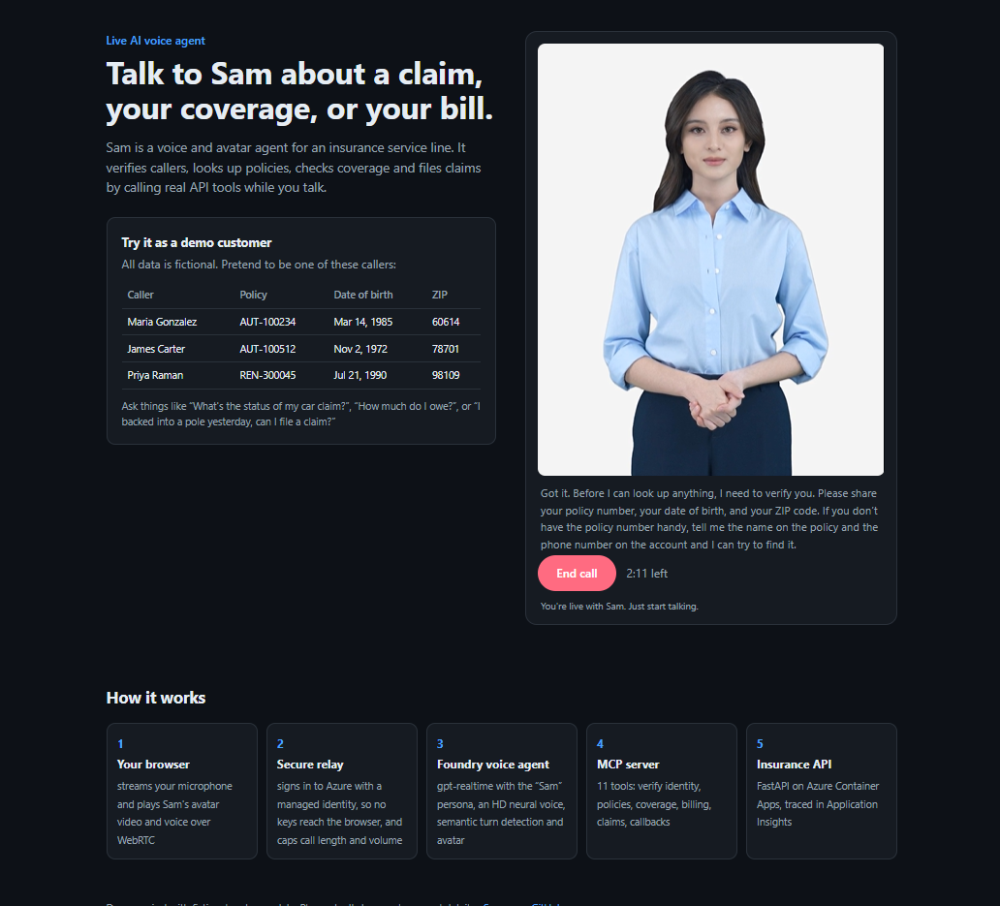

AI voice agent project
Sam answers an insurance service line, by voice and on video.
Callers talk to Sam in the browser. Sam verifies who they are, looks up policies, checks coverage, and files claims by calling real API tools during the conversation.
Checking whether the live demo is online…
- Natural voice with an avatar. Realtime speech, semantic turn detection and interruptions.
- Real tools, not a script. 11 MCP tools for identity checks, policies, coverage, billing, claims and callbacks.
- Guardrails. Verifies identity before sharing details, never guesses coverage, and hands off to a human.
- Production patterns. Managed identity, rate limits on the public page, and tracing in Application Insights.

A typical call
SamThanks for calling Contoso Mutual, this is Sam. I can help you file or check on a claim, or answer questions about your policy or bill.
CallerAsks about their car claim and gives a policy number, date of birth and ZIP code.
verify_customer_identity → list_claims → get_claim_status
SamConfirms the caller, then reads back the claim's status, adjuster and next step from the tools' results.
Caller“Would hail damage to my roof be covered?”
check_coverage
SamExplains which coverage applies and the deductible, and says the adjuster makes the final call.
How it works
- Browserstreams the caller's microphone and plays Sam's avatar video and voice over WebRTC
- Secure relaysigns in to Azure with a managed identity, so no keys reach the browser, and caps call length and volume
- Foundry voice agentgpt-realtime with the “Sam” persona, an HD neural voice, semantic turn detection and avatar
- MCP server11 tools: verify identity, policies, coverage, billing, claims, callbacks
- Insurance APIFastAPI on Azure Container Apps, traced in Application Insights
Built with
- Microsoft Foundry Agent Service
- gpt-realtime
- Azure AI Speech avatar
- Model Context Protocol
- FastMCP
- FastAPI
- Azure Container Apps
- Application Insights
- Bicep + azd
- GitHub Actions